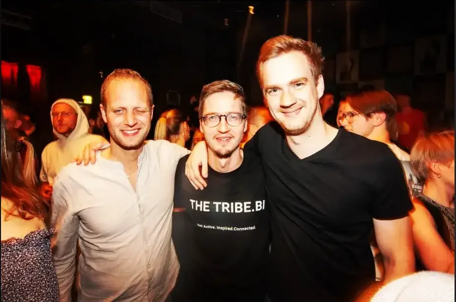

Social Warm-up
Samstags
Social Warm-up
Samstags
Unser wöchentliches Kennenlern-Ritual. Locker, ohne Druck, für alle offen. Der einfachste Weg, in die Tribe reinzukommen.
Community beitretenKeine App, kein Wischen. Tritt unserer WhatsApp-Community bei — und sei dabei beim Social Warm-up jeden Samstag in Bielefeld.


 Schon 167 ziehen zusammen los — komm mit.
Schon 167 ziehen zusammen los — komm mit.

Kostenlos · Bielefeld & NRW · Sa Social Warm-up
Jeden Samstag
Unser wöchentliches Ritual: ein lockeres Treffen, das das Eis bricht. Ankommen, kurz kennenlernen, gemeinsam den Abend starten — und danach entstehen die Pläne für den Rest des Wochenendes. Kein Ticket, keine Anmeldung, einfach kommen.
Wann
Samstags 18:00
Wo
Bielefeld & Münster
Kosten
Kostenlos
Ort & Zeit
In der Community
So funktioniert's
Bei uns ist die Community der Eintrittspunkt — nicht eine App und nicht ein Ticket. Du kommst rein, du bist dabei.
Ein Klick, WhatsApp-Gruppe beitreten. Kein Profil, keine Bio, keine Bewerbung. Sag kurz Hi — der Rest passiert von selbst.
Jeden Samstag lockeres Kennenlernen in Bielefeld oder Münster. Perfekt für den Einstieg — hier lernst du die Gesichter kennen.
Wer will, zieht danach mit weiter: Abendessen zu sechst, entspannte Drinks oder gemeinsam ausgehen, bis die Stadt schläft.
Unsere Formate
Alles startet mit dem Social Warm-up am Samstag. Wer mehr will, findet in der Community alle weiteren Termine.
Social Warm-up
Samstags
Unser wöchentliches Kennenlern-Ritual. Locker, ohne Druck, für alle offen. Der einfachste Weg, in die Tribe reinzukommen.
Community beitreten Abendessen
Regelmäßig
Abendessen
Regelmäßig
Sechs Menschen, ein Tisch, gutes Essen. Termine und Restaurants werden in der Community angekündigt.
In der Gruppe anmelden
Ausgehen Nach dem Warm-upNach dem Warm-up ziehen wir gemeinsam weiter — Bar, Kneipe oder Club. Echte Nächte, echte Gespräche, neue Leute.
MitkommenIn Zahlen
Wir wachsen langsam und mit Absicht. In der Community kennt sich jeder — und beim Social Warm-up trifft man sich Woche für Woche wieder.
Stimmen aus der Tribe
“Bin zum Warm-up am Samstag gekommen, weil eine Freundin den Link geteilt hat. Zwei Stunden später kannte ich zehn neue Leute. Absurd einfach.”
“In Münster neu, kannte keinen. Der WhatsApp-Chat war der schnellste Weg rein — beim ersten Warm-up hat mich direkt jemand mitgenommen zum Abendessen.”
“Ich mag, dass die Community der Einstieg ist. Kein Ticket, kein Formular. Einfach beitreten, kurz Hi sagen — und am Samstag hin.”
Unsere Städte
In Bielefeld treffen wir uns rund um Altstadt, Bahnhofsviertel und den Siegfriedplatz. Das Warm-up findet an wechselnden Orten in der Innenstadt statt.
Nächstes Social Warm-up
Bielefeld
Samstag · Ort in der Community
Wo wir uns treffen
Altstadt · Bahnhofsviertel · Siegfriedplatz
FAQ
Noch offene Fragen? Frag direkt in der Community — meistens antwortet jemand innerhalb weniger Minuten.
Tritt einfach unserer WhatsApp-Community bei — der Link ist überall auf dieser Seite. Kein Profil, keine Bewerbung, keine Kosten.
Unser wöchentliches Kennenlern-Treffen jeden Samstag in Bielefeld und Münster. Locker, kostenlos, für alle offen. Der perfekte Einstieg in die Community.
Ort und Uhrzeit werden jede Woche in der WhatsApp-Gruppe geteilt — meistens ein Café, eine Bar oder ein Park in der Innenstadt.
In der Community werden Abendessen zu sechst, Drinks und gemeinsame Abende organisiert — danach ziehen wir oft zusammen weiter. Wer will, ist dabei — kein Muss.
Jeder ab 18, der Lust auf neue Menschen hat. Unabhängig von Alter, Geschlecht oder Hintergrund. Respekt und offene Neugier sind die einzigen Regeln.
Die Community und das Social Warm-up sind kostenlos. Beim Abendessen und bei Drinks zahlst du nur deinen eigenen Verzehr.
Ein Klick, du bist drin
Die WhatsApp-Community ist der Eintrittspunkt. Beitreten, kurz vorstellen — und am Samstag beim Social Warm-up sehen wir uns.
Kostenlos · Bielefeld & Münster · Kein Profil nötig